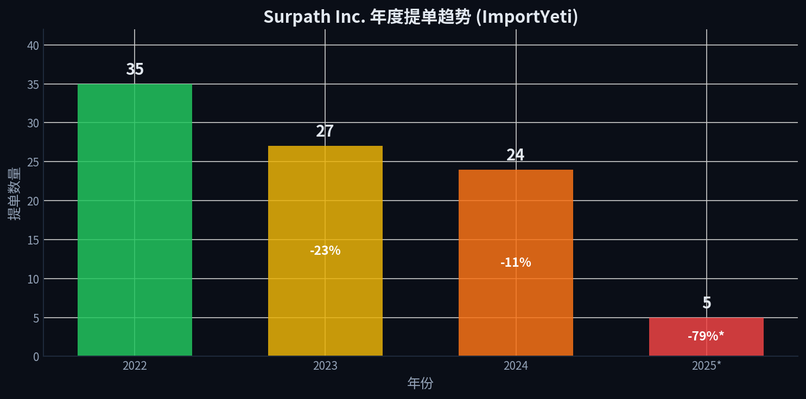
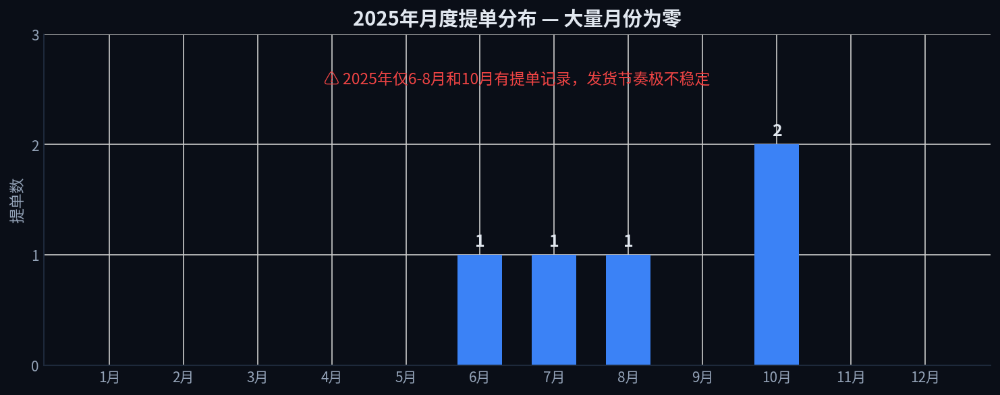
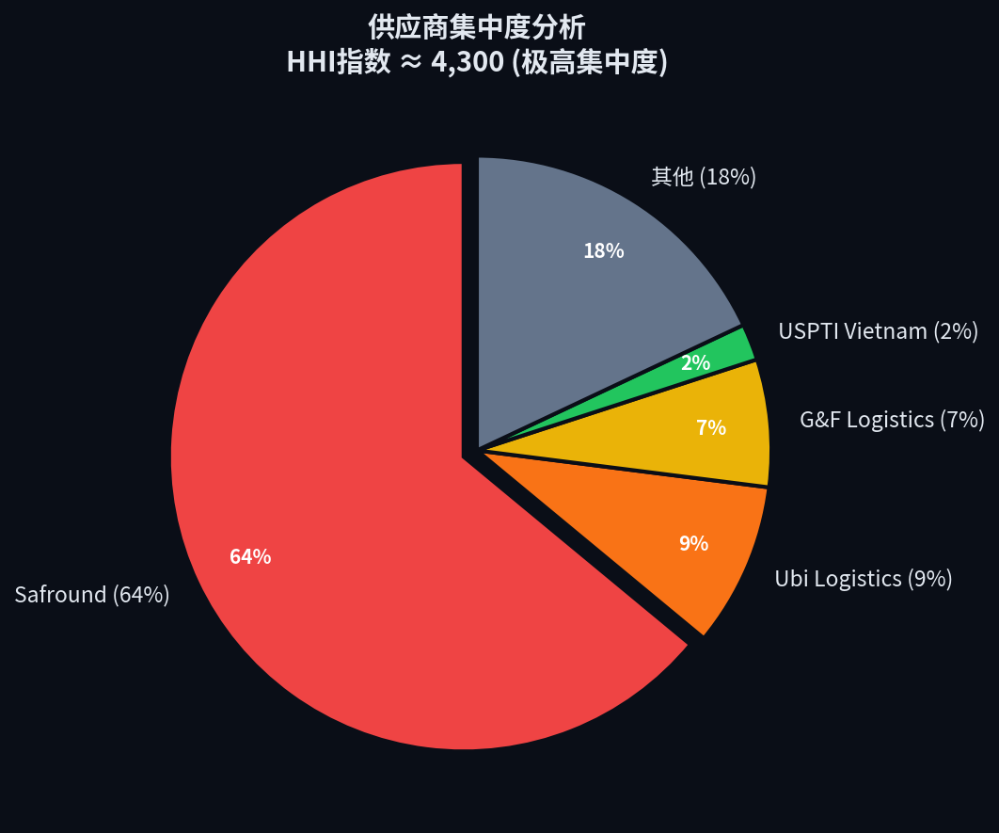
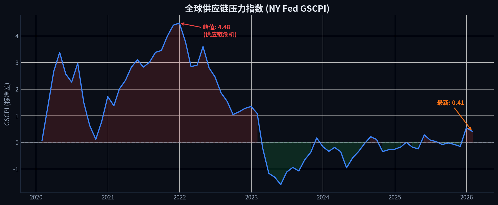
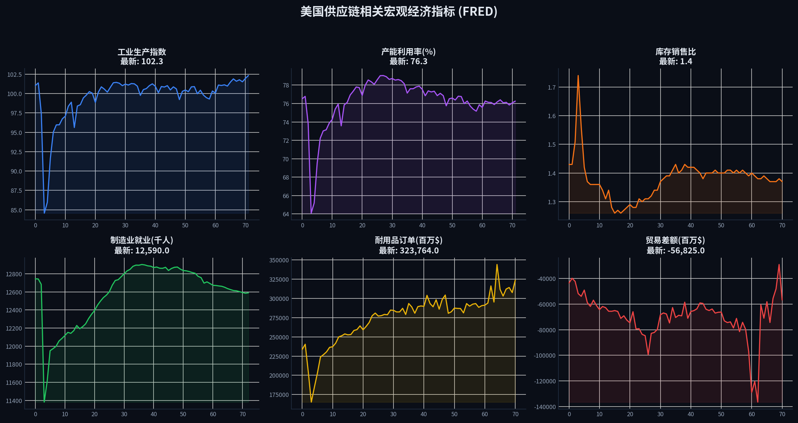
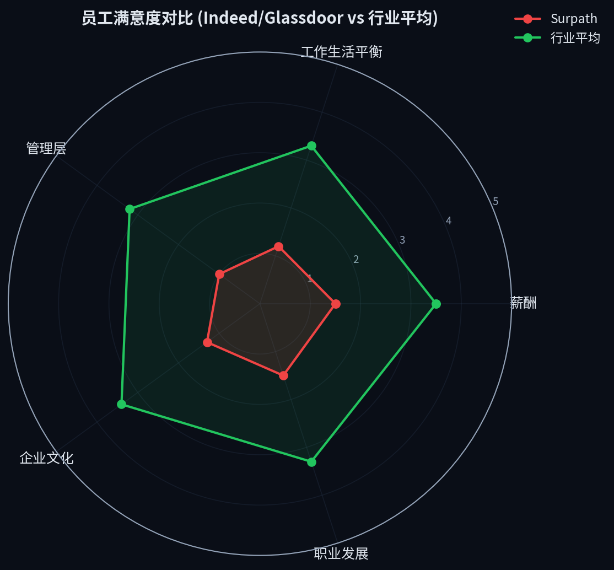
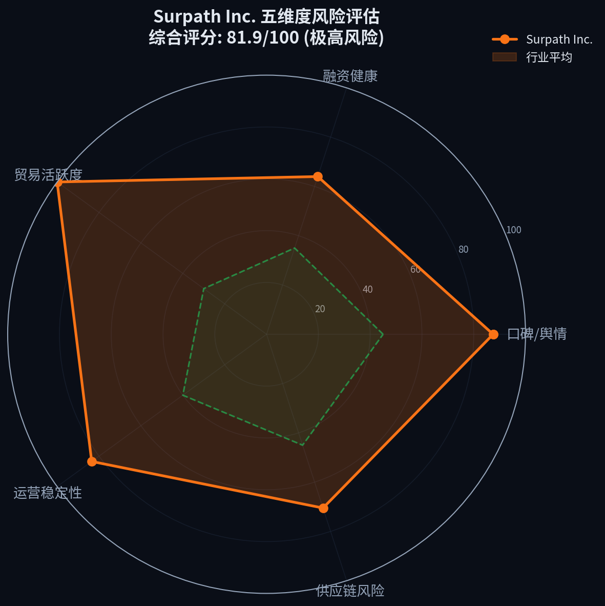

CRITICAL RISK
供应链聚焦
非上市企业
跨境物流
Surpath Inc. (驿玛科技)
非上市企业 · 跨境物流科技 · AI全球企业风险预警AGENT
81.9
综合风险评分
贸易活跃度
100.0
极高风险口碑/舆情
87.5
极高风险运营稳定性
83.5
极高风险供应链风险
70.5
高风险融资健康
64.0
中高风险核心风险预警
CRITICAL
贸易活动停滞：年度提单量连续三年下滑，2025年同比暴跌79%，且年内有7个月无任何海运提单记录，显示公司主营业务可能已陷入停滞。
数据来源：ImportYeti · 置信度：高
CRITICAL
融资枯竭：自2023年2月A轮融资后，已连续36个月无新融资进入。对于一家需要持续投入技术研发和市场扩张的创业公司而言，这是极其危险的信号。
数据来源：Crunchbase / Tracxn · 置信度：高
HIGH
司法诉讼：公司于2023年11月被诉至加州中区联邦法院（案号8:2023cv02080），案由为"运输中货物损坏"（49 U.S.C. § 81），表明其核心物流服务存在履约质量问题。
数据来源：Justia / PACER · 置信度：高
HIGH
管理与文化危机：员工评价极差（Indeed 1.0/5.0），普遍反映"管理混乱"、"计划频繁变更"、"工作时间长且无意义讨论多"。
数据来源：Indeed / Glassdoor · 置信度：中
HIGH
供应链高度集中：85%的货物来自中国，单一供应商Safround Logistics占比超过64%（HHI指数4,300），在当前地缘政治和贸易环境下构成巨大脆弱性。
数据来源：ImportYeti · 置信度：高
企业概况
Surpath Inc.（驿玛科技）成立于2019年，由前亚马逊员工创立，定位为"AI驱动的跨境供应链科技公司"。总部位于美国加州Tustin，在中国上海设有团队。核心业务为跨境电商卖家提供物流、仓储、软件一站式解决方案。
成立时间
2019年7月
融资阶段 / 累计融资
Series A / $15.65M
员工规模
11-50人 (LinkedIn)
管理团队
马锦冬 (CEO) · 马飞 (President) · 王晴 (CPO)
主要投资方
eWTP Arabia Capital · 北极光创投 · 经纬中国
法律实体 / 注册地
Surpath, Inc. (Delaware Corp.)
供应链风险深度分析
4.1 贸易活跃度分析
ImportYeti海关提单数据显示，Surpath的业务量在2022年达到顶峰后急剧萎缩。2025年截至10月仅有5票提单，同比暴跌79%。

图1：Surpath Inc. 年度提单趋势 (数据来源：ImportYeti)

图2：2025年月度提单分布 — 7个月无任何发货记录
4.2 供应商结构分析
供应链高度集中于中国供应商，Safround Logistics一家独大（64%），HHI指数高达4,300。

图3：供应商集中度分析 — HHI ≈ 4,300 (极高集中度)
| 供应商 | 所在地 | 占比 | HS编码 |
|---|---|---|---|
| Safround Logistics | 宁波, 中国 | 64% | 9503, 9018, 2470, 9403 |
| Ubi Logistics China | 民生, 中国 | 9% | — |
| G & F Logistics | 浦东, 中国 | 7% | 9404 |
| Star Advanced Materials | 济南, 中国 | 4% | — |
| USPTI Viet Nam | 越南 | 2% | 8302 |
| 其他5家 | 中国/越南 | 14% | 8711等 |
4.3 全球供应链宏观环境

图4：全球供应链压力指数 (NY Fed GSCPI)

图5：美国供应链相关宏观经济指标 (FRED)
融资与运营分析
5.1 融资时间线

图6：Surpath Inc. 融资时间线 — 3年融资空窗期
2019年7月
公司成立
由前亚马逊员工在上海和Tustin创立
2021年10月
Pre-A轮 — 1亿人民币
经纬中国领投，指数资本担任FA
2022年6月
Pre-A+轮 — 数千万元
北极光创投独家投资
2023年2月
A轮 — 数千万美元
eWTP Arabia Capital独家投资
2023年2月 — 至今
36个月融资空窗期
无新一轮融资信息，现金流承压
5.2 员工口碑

图7：员工满意度对比 — 全面低于行业平均
| 维度 | Surpath | 行业平均 | 差距 |
|---|---|---|---|
| 工作生活平衡 | 1.0 | 3.3 | -2.3 |
| 薪酬福利 | 1.0 | 3.5 | -2.5 |
| 管理层 | 1.0 | 3.2 | -2.2 |
| 企业文化 | 1.0 | 3.4 | -2.4 |
| 职业发展 | 3.0 | 3.3 | -0.3 |
员工评论摘要
"The working hours are long and most time is wasted on meaningless discussions. Management is completely a mess. The plans keep changing all the time and you have no clues about what you should do." — Indeed, 2023年10月
5.3 司法诉讼
| 案件信息 | 详情 |
|---|---|
| 案件名称 | Shenzhen Gangshi Technology Co., LTD v. Surpath, Inc. et al |
| 案号 | 8:2023cv02080 |
| 法院 | 加州中区联邦地方法院 |
| 立案日期 | 2023年11月4日 |
| 案由 | 运输中货物损坏 (49 U.S.C. § 81) |
| 被告 | Surpath, Inc.、Value Logistics, Inc.、KNN Logistics, Inc.、Arturo Giovanni Moreno |
| 状态 | 进行中 |
竞争格局
| 竞争对手 | 成立 | 总部 | 融资 | 核心优势 |
|---|---|---|---|---|
| Hurricane Commerce | 2016 | 英国 | Series A | 跨境贸易数据合规与关税计算 |
| eFreight (易仓) | 2013 | 北京 | Series B | 强大的ERP和海关清关软件 |
| Globavend | 2014 | 香港 | 上市 | 面向电商平台的一站式履约服务 |
| Moduslink | 1968 | 美国 | 上市 | 全球供应链外包服务巨头 |
| CNE | 2003 | 上海 | Series A | 跨境物流方案 |
五维度风险全景

图8：Surpath Inc. 五维度风险评估雷达图 vs 行业平均
风险管理建议
贷前/投资前尽调
不建议合作。若必须合作，需对公司实际控制人进行深度背景调查，并要求提供银行流水以验证实际经营状况。必须对未决诉讼进行专项法律尽调。
事中监控
实施最高级别的监控。每日监控其提单数据变化、法院传票更新、关键人员离职情况。任何进一步的业务下滑或负面消息都应触发平仓或退出机制。
事后风险处置
若已存在业务往来，应立即评估应收账款风险，并考虑采取法律手段保全资产。对于投资方，应准备启动清算或破产程序，最大程度减少损失。
数据来源
ImportYeti
U.S. Customs
Justia / PACER
Crunchbase
Tracxn
Indeed
Glassdoor
LinkedIn
FMCSA
NY Fed GSCPI
FRED
World Bank